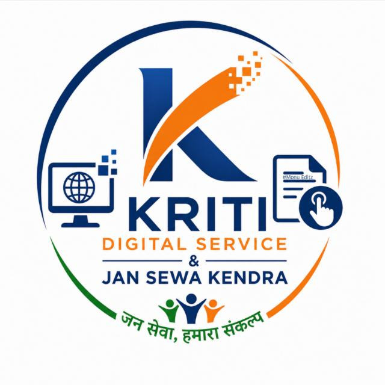
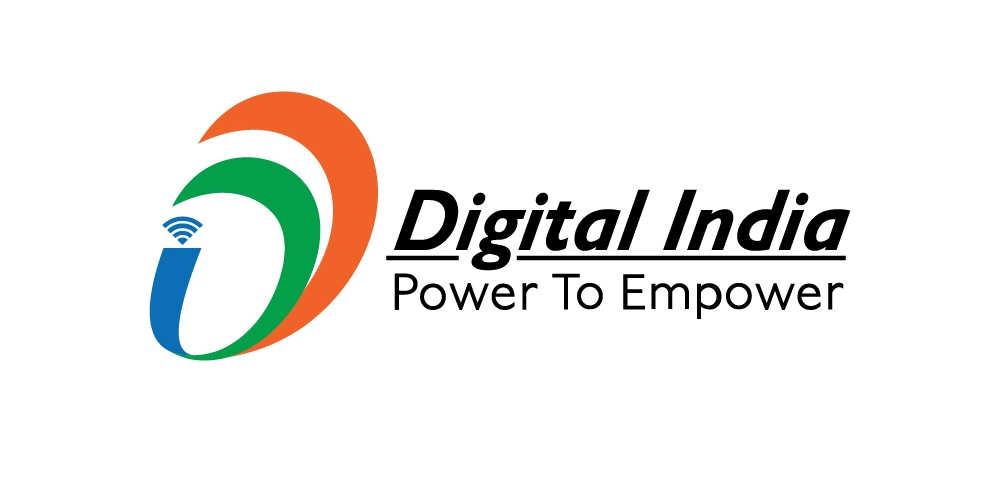

Authorized Common Services Center (CSC)

Direct assistance with Aadhaar card registrations, structured PAN allocations, voter tracking data lists, and official dynamic records.
AePS secure immediate cash processing windows, domestic balance transmissions, open account paths, and rural economic micro-insurance.
Instantaneous processing loops for lightning utilities, major cellular connections, standard DTH providers, and localized municipal demands.
Access points for state educational arrays, digital literacy initiatives, scholarship applications, and verified online certifications.
Welcome to Kriti Digital Service, your trusted partner for a wide range of essential services. We are committed to making your life simpler and more convenient by offering a comprehensive suite of services that cater to your everyday needs.
At Kriti Digital Service, we understand the importance of accessible and reliable services in today’s fast-paced world. That’s why we bring you a one-stop solution for your banking, recharge, and bill payment needs. Whether you need to top up your mobile phone, pay utility bills, or manage your finances, we have you covered.
Our mission extends beyond just convenience. We are proud to be a part of your community, and we take our role seriously. As a Government-approved service provider, we are dedicated to facilitating access to important government services. Whether you require assistance with Aadhar card registration, PAN card application, or any other government-related task, our knowledgeable staff is here to assist you every step of the way.
Traveling can be stressful, but with Kriti digital Service, planning your journeys becomes hassle-free. Our travel services enable you to book flights, trains, buses, and hotels with ease. We aim to simplify your travel experience, ensuring that you can focus on creating memorable moments during your trips.
Kushwaha coloni Baberu, Uttar Pradesh, India
+91 XXXXX XXXXX
amit@kritidigitalservice.in
Mon–Sat, 9:00 AM – 6:00 PM (Sunday Closed)